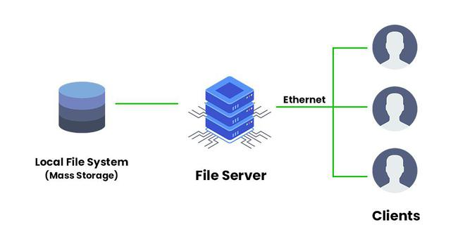

การตั้งค่าเว็บเซิร์ฟเวอร์

เว็บเซิร์ฟเวอร์เป็นโครงสร้างพื้นฐานของอินเทอร์เน็ต ทำหน้าที่จัดการคำขอ HTTP และให้บริการเนื้อหาเว็บไซต์แก่ผู้ใช้งาน เว็บเซิร์ฟเวอร์สมัยใหม่ เช่น Apache, Nginx และ Node.js ให้โซลูชันที่มีประสิทธิภาพสูงสำหรับการโฮสต์เว็บไซต์และเว็บแอปพลิเคชัน
ตัวอย่างการตั้งค่า:
server {
listen 80;
server_name example.com;
root /var/www/html;
index index.html;
}
การจัดการฐานข้อมูลเซิร์ฟเวอร์
เซิร์ฟเวอร์ฐานข้อมูลมีหน้าที่เก็บและจัดการข้อมูลของแอปพลิเคชัน ให้การเข้าถึงอย่างปลอดภัยและมีประสิทธิภาพ โซลูชันยอดนิยม ได้แก่ MySQL, PostgreSQL และ MongoDB ซึ่งแต่ละตัวมีจุดเด่นเฉพาะและเหมาะกับกรณีการใช้งานที่แตกต่างกัน
ตัวอย่างคำสั่ง SQL:
SELECT users.name, orders.total
FROM users
JOIN orders ON users.id = orders.user_id
WHERE orders.date >= '2024-01-01'
ORDER BY orders.total DESC;
โครงสร้างพื้นฐานระบบคลาวด์

โครงสร้างพื้นฐานระบบคลาวด์ให้ทรัพยากรการประมวลผลที่ปรับขนาดได้ตามต้องการ ช่วยให้องค์กรสามารถนำแอปพลิเคชันขึ้นระบบโดยไม่ต้องดูแลฮาร์ดแวร์ บริการยอดนิยม เช่น AWS, Google Cloud และ Azure ให้โซลูชันครบวงจรด้านการโฮสต์ การจัดเก็บ และเครือข่าย
ตัวอย่างการนำขึ้นระบบ:
# ส่งขึ้นระบบคลาวด์
docker build -t myapp .
docker push registry.cloud.com/myapp
kubectl apply -f deployment.yaml
kubectl expose deployment myapp --port=80